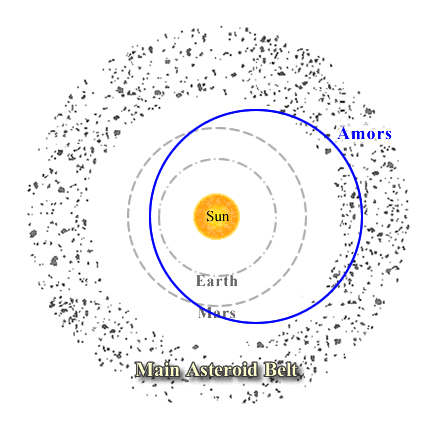

Amor asteroids are Earth-approaching Near Earth Asteroids (NEAs) with perihelion distances between 1.017 and 1.3 AU and semi-major axes greater than 1 AU. While they do not cross the Earth’s orbit, the majority of them do cross the orbit of Mars, and those with extreme eccentricities have aphelia beyond the orbit of Jupiter.

There are currently around 1,500 Amor asteroids catalogued, though close encounters with either Earth or Mars may alter their orbits, and they may evolve into Earth-crossing Apollo asteroids . Their lifetimes are also shortened by their potential to collide with Mars, meaning that the population was not formed in place and must be continually replenished.
The large range in the composition of Amor asteroids suggests that they originate from a variety of different sources. Some are undoubtedly extinct cometary nuclei, others would have been ejected from the Kirkwood gaps in the main asteroid belt through gravitational interactions with Jupiter, while others could have been perturbed from the inner main asteroid belt through perturbations induced by Mars.
In addition, it is thought that the two small moons of Mars, Phobos and Deimos, may be Amor asteroids captured by Mars.
Although the Amor group of NEAs are named for their prototype 1221 Amor, the most famous asteroid in this group is 433 Eros. In 2001, 433 Eros was the first asteroid to be extensively studied and ultimately landed upon by a space probe (the NEAR Shoemaker mission).